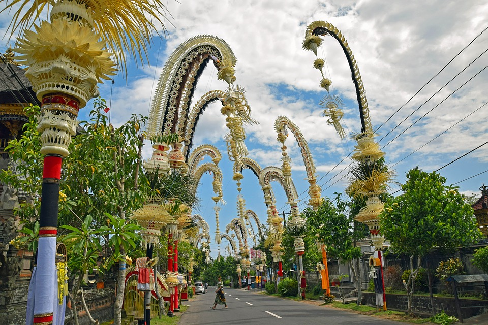
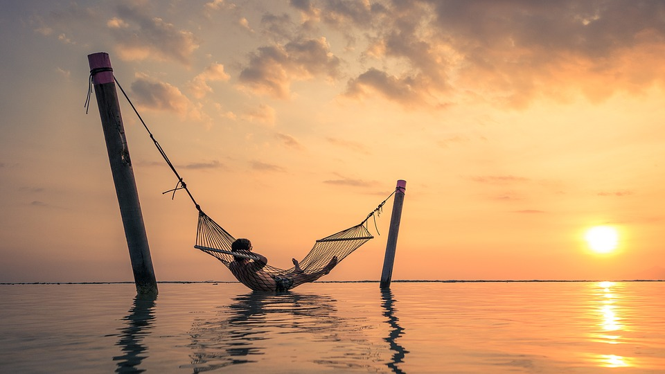
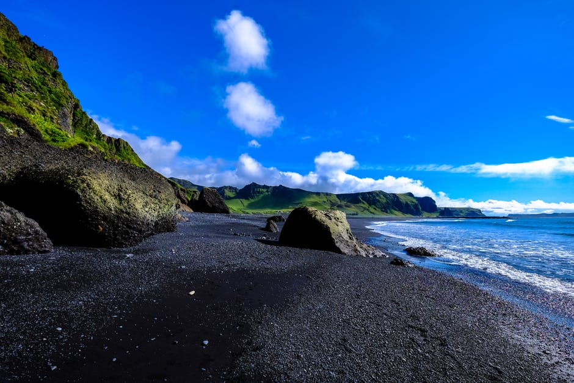
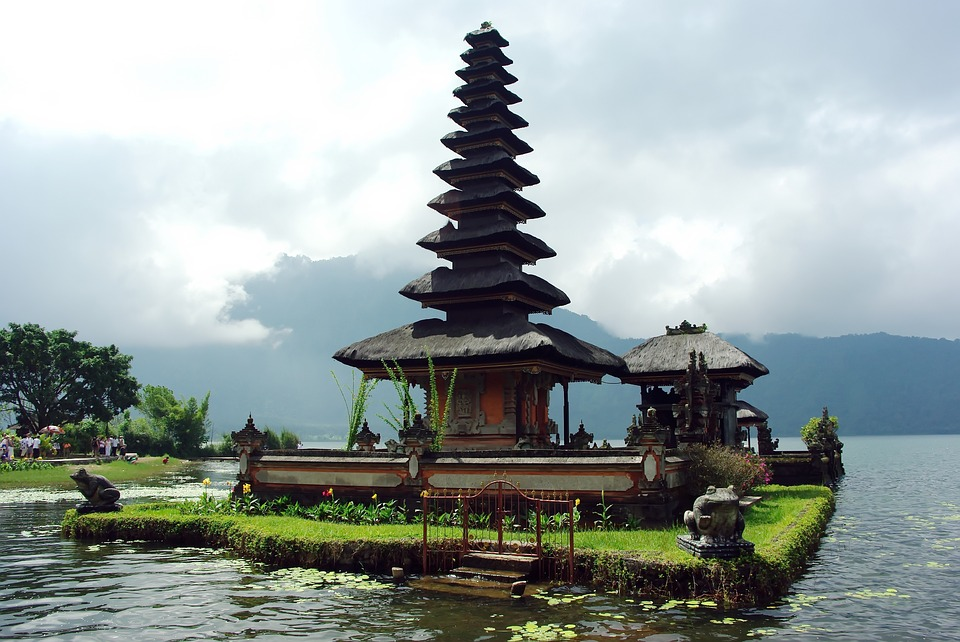

Тур на Бали
Остров Бали, Индонезия - одно из красивейших и живописных мест нашей планеты. Одно из самых подходящих мест для незабываемого романтического отдыха.
Программа:
-
День первый.
Прибытие в аэропорт Бали. Трансфер из аэропорта. Размещение в отеле.
 -
День второй.
Свободный день, чтобы насладиться шармом острова
 -
День третий.
Свободный день или факультативная экскурсия по Бали (за дополнительную оплату):

Парк орхидей — храм Пещера Летучих Мышей "Гоа Лава" — пляж с черным песком — водный дворец Тиртагангга — водный дворец Таман Уджунг. Вы отправитесь в самую загадочную и красивую часть острова — на восток. В начале пути вы посетите красивый и уютный парк орхидей, где можно полюбоваться на коллекцию орхидей и других уникальных цветов тропического леса, а также подкрепиться ароматным кофе. Дальнейший путь пролегает через самое живописное восточное побережье Бали. Следующие две остановки: храм Пещера Летучих Мышей и маленькая деревня, которая расположена вдоль пляжа с черным песком.Затем маршрут лежит к водным дворцам.
Вы проедете через маленький и уютный городок Чандидаса, полюбуетесь прекрасными видами на Индийский океан. Посещение самих дворцов не оставит вас равнодушными, так как это одни из самых красивых достопримечательностей райского острова.
-
...
Стоимость тура
| Количесвто человек | Цена | Количество дней | Количесвто ночей |
|---|---|---|---|
| 1 | 80000 сом | 12 | 11 |
| 2 | 160000 сом | 12 | 11 |
| 3 | 240000 сом | 12 | 11 |